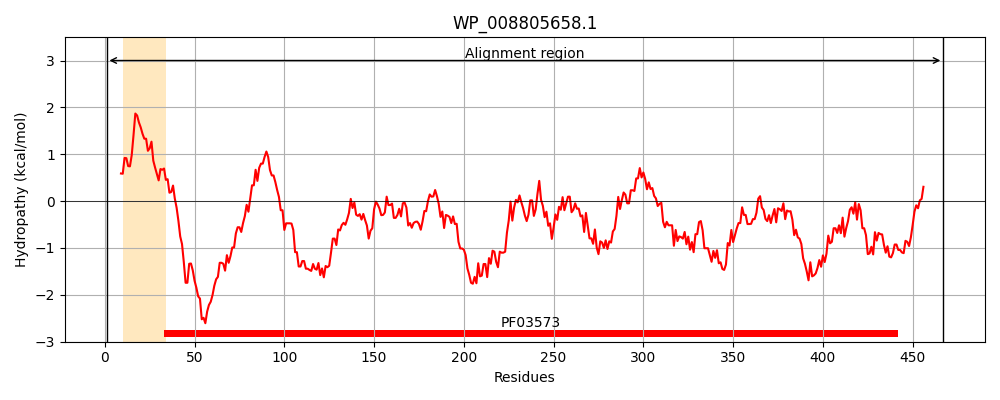
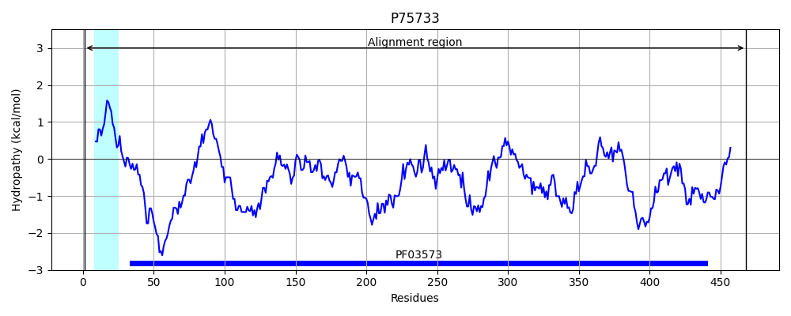
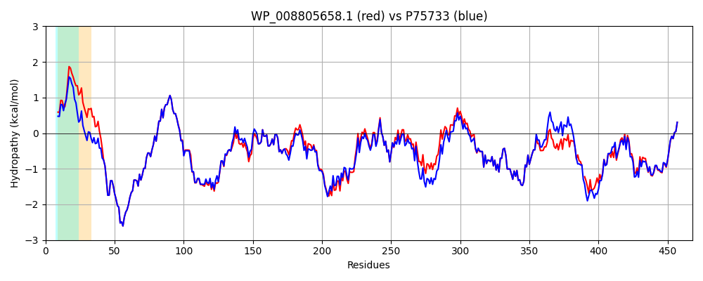

Hit Accession: P75733
Hit TCID: 1.B.25.1.13
Hit Description: gnl|BL_ORD_ID|11399 gnl|TC-DB|P75733|1.B.25.1.13 Uncharacterized protein ybfM OS=Escherichia coli (strain K12) GN=ybfM PE=4 SV=1
Mach Len: 468
e:0.000000
Query TMS Count : 1
Hit TMS Count: 1
TMS-Overlap Score: 0.800000
Predicted Substrates:CHEBI:29470;2-(Biaryl)carbapenems
BLAST Alignment:
Score: 2281 , Bit scores: 883 bits, E-value: 0.0e+00, Alignment length: 468, Percentage identity: 88
Query: 1 MRTFSGKRSTLALAIAAVTAMSGWVVVPQASAAGFIDDSTLTGGIYYWQRERDRKDVTDGDKYKTNLSHSTWNANLDFQSGYAADMFGLDIAAFTAIEMAENGDSGHPNEIAFSSRNKAYDEDYSGDKSGISLYKAAAKFKYGPAWARAGYIQPTGQTLLAPHWSFMPGTYQGAEAGANFDYGTAGALSFSYMWTNEYKAPWHIEMDDFYQNDKKTKVDYLHSVGAKYDFKNDLVLEAAFGQAQGYIDQYFAKASYKFDVAGAPLSTSYQFYGTRDKVSNGGVNDIYDGTAWLQALTFGYKVADVLDLRLEGTWVKADGQQGYFLQRMTPTYASSNGRLDIWWDNRSDFNANGEKAVFFGAMYDMKNWDMPGWAFGASYVYAWDAKPGR-MSSPDAYYDPDYRLKESAYSLDALYTVQEGRAKGTLFKLHFTQYDNHSDIPSWSGGYGNIFQDERDVKFMVIAPFTIF 467
MRTFSGKRSTLALAIA VTAMSG++ +P+A A GFIDDSTLTGGIYYWQRERDRKDVTDGDKYKTNLSHSTWNANLDFQSGYAADMFGLDIAAFTAIEMAENGDS HPNEIAFS NKAYDED+SGDKSGISLYKAAAKFKYGP WARAGYIQPTGQTLLAPHWSFMPGTYQGAEAGANFDYG AGALSFSYMWTNEYKAPWH+EMD+FYQNDK TKVDYLHS GAKYDFKN+ VLEAAFGQA+GYIDQYFAKASYKFD+AG+PL+TSYQFYGTRDKV + VND+YDGTAWLQALTFGY+ ADV+DLRLEGTWVKADGQQGYFLQRMTPTYASSNGRLDIWWDNRSDFNANGEKAVFFGAMYD+KNW++PG+A GASYVYAWDAKP S+PDAYYD + ++ESAYSLDA+YT+Q+GRAKGT+FKLHFT+YDNHSDIPSW GGYGNIFQDERDVKFMVIAPFTIF
Sbjct: 1 MRTFSGKRSTLALAIAGVTAMSGFMAMPEARAEGFIDDSTLTGGIYYWQRERDRKDVTDGDKYKTNLSHSTWNANLDFQSGYAADMFGLDIAAFTAIEMAENGDSSHPNEIAFSKSNKAYDEDWSGDKSGISLYKAAAKFKYGPVWARAGYIQPTGQTLLAPHWSFMPGTYQGAEAGANFDYGDAGALSFSYMWTNEYKAPWHLEMDEFYQNDKTTKVDYLHSFGAKYDFKNNFVLEAAFGQAEGYIDQYFAKASYKFDIAGSPLTTSYQFYGTRDKVDDRSVNDLYDGTAWLQALTFGYRAADVVDLRLEGTWVKADGQQGYFLQRMTPTYASSNGRLDIWWDNRSDFNANGEKAVFFGAMYDLKNWNLPGFAIGASYVYAWDAKPATWQSNPDAYYDKNRTIEESAYSLDAVYTIQDGRAKGTMFKLHFTEYDNHSDIPSWGGGYGNIFQDERDVKFMVIAPFTIF 468 | Protein Hydropathy Plots: |
|---|
|  |  |
Pairwise Alignment-Hydropathy Plot:
|
|---|
|  |